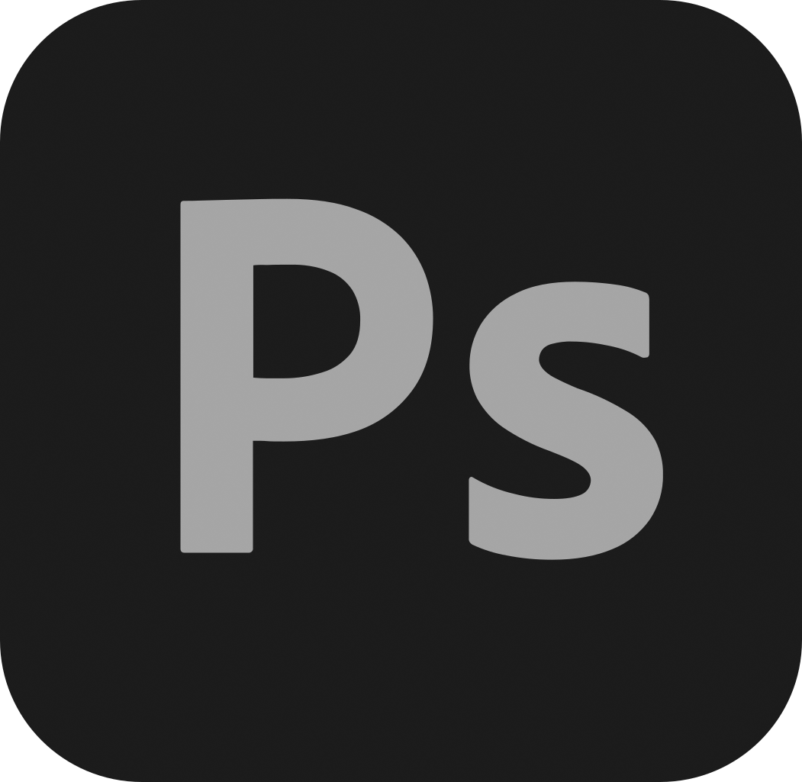
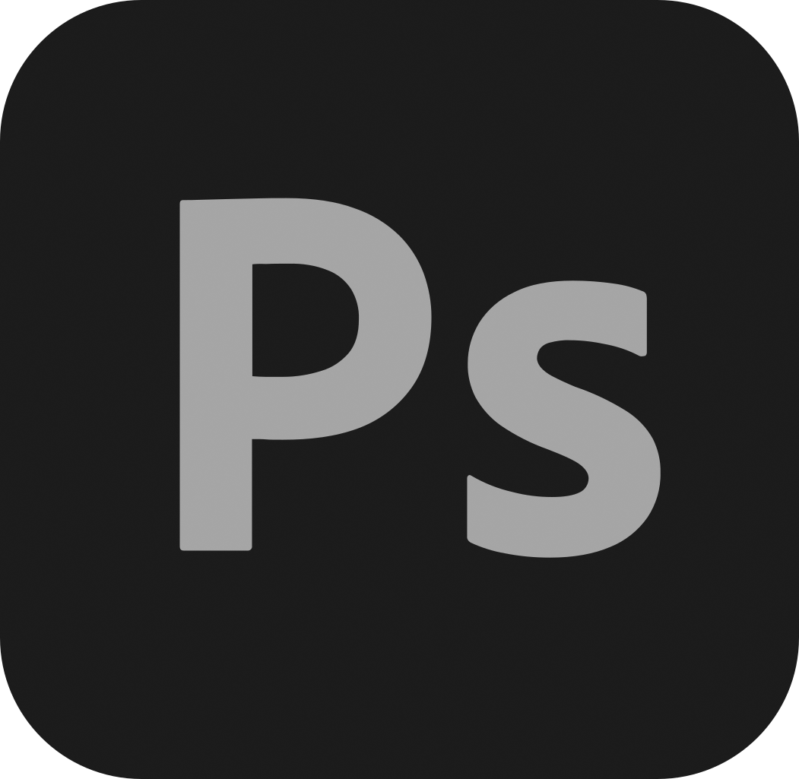

Hi,👋🏻 I'm Zain
Welcome to my video editing portfolio. Here you can find some of favorite edits I've made over the past few years. Most of them are from various Anime I've watched, but once in a while I make some on movies/shows too.
SOFTWARE
1. Topaz AI
Topaz AI is the first tool I use in my editing process. It specializes in upscaling, interpolating, and enhancing footage, which is especially useful when working with lower-resolution or older clips that need to be improved before they are used in a project. The AI-powered tools in Topaz help me clean up video noise, sharpen blurry footage, and even generate smoother slow-motion effects. This is particularly helpful when I'm working with footage that isn't originally high quality or when I need to repurpose older content to make it look modern. By using Topaz AI before moving into the main editing stage, I ensure that my footage looks as clean and polished as possible, making the editing process smoother later on.
2. Adobe Premiere Pro
Premiere Pro is where all the real magic happens. It's my primary editing software, where I assemble all the clips, cut them together, add transitions, and structure my entire project. Sound design is a big part of my editing process, and Premiere gives me the tools to adjust audio levels, apply effects, and synchronize sound with visuals. I also use it for color correction and grading, which helps me achieve a cinematic look that matches the mood of my edit. Special effects, like speed ramps, keyframed motion, and creative text overlays, are all handled within Premiere as well. One of the best parts about using Premiere is its integration with other Adobe software, which allows me to seamlessly switch between programs while working on different aspects of my project. Once everything is complete, I export and render my final video from Premiere, ensuring the highest quality settings for the best viewing experience.
3. Adobe Photoshop
Photoshop is an essential tool for my post-production process, especially when it comes to creating thumbnails for social media and video previews. A well-designed thumbnail can significantly impact viewer engagement, so I put effort into making them eye-catching and visually appealing. Over time, I've developed a series of templates that streamline the process, allowing me to quickly swap out images, adjust text, and apply effects without starting from scratch every time. These templates help me maintain a consistent style while also saving time. Beyond thumbnails, I also use Photoshop to create additional assets for my videos, such as custom overlays, title cards, or background elements that enhance the overall presentation of my edits. The ability to manipulate images with precision in Photoshop makes it a valuable tool in my workflow.
4. Blender
Blender is not something I use for every project, but when I do, it adds a whole new level of creativity to my work. It's my go-to software for creating 3D animations, whether it' s a dynamic logo reveal, an intro sequence, or a special effect that requires a 3D element. However, because 3D animation is time-consuming, I only use Blender when I feel that a project truly benefits from it. Modeling, texturing, and rendering in Blender can take hours or even days, depending on the complexity of the scene, so I have to carefully decide whether the extra effort is worth it. When I do use Blender, it allows me to add unique, professional-looking elements that elevate the production value of my edits. While I mainly stick to 2D editing, having Blender as an option gives me the flexibility to experiment with 3D elements whenever I want to push my projects to the next level.